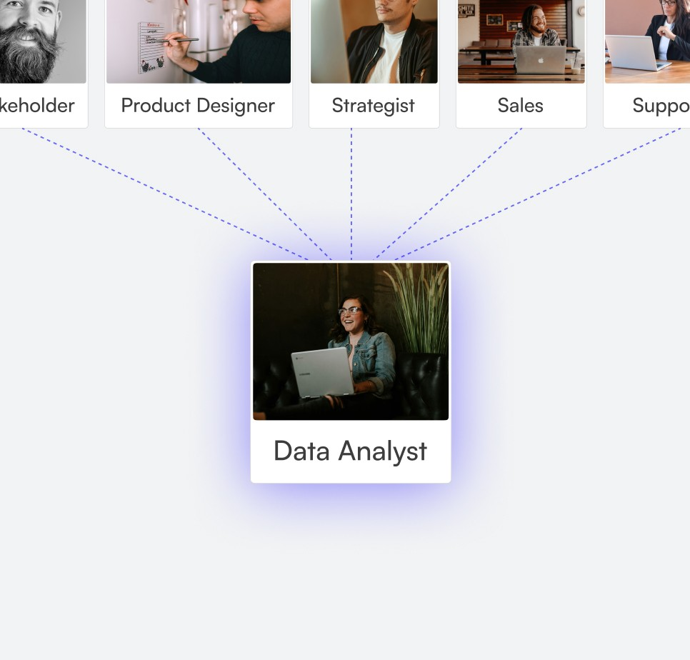
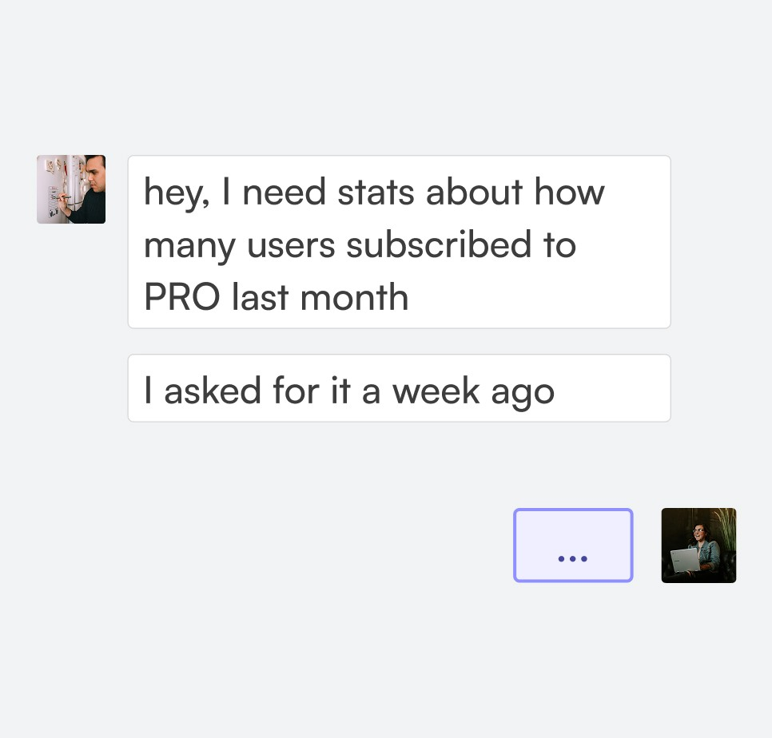
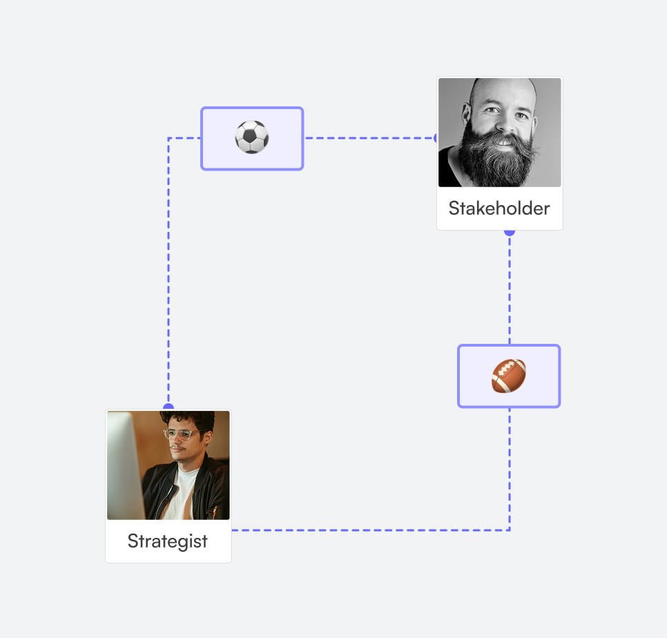
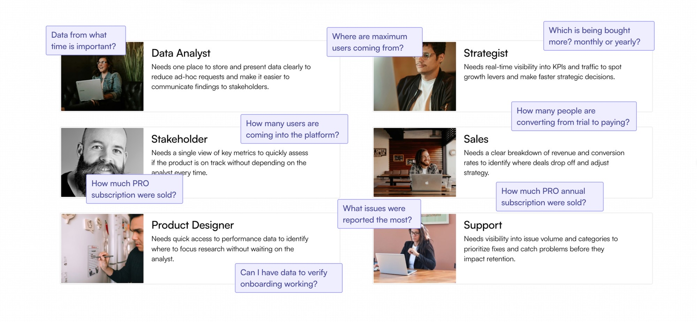
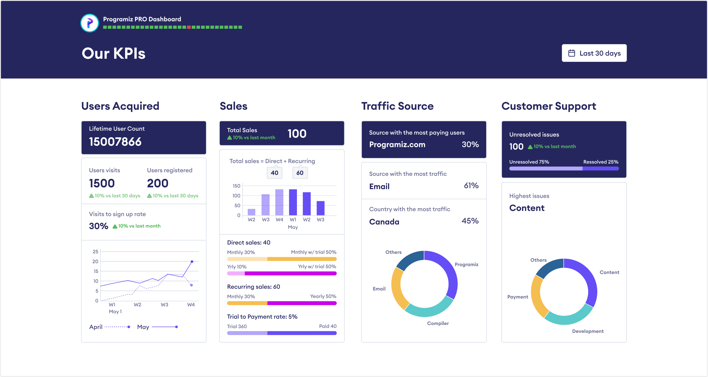
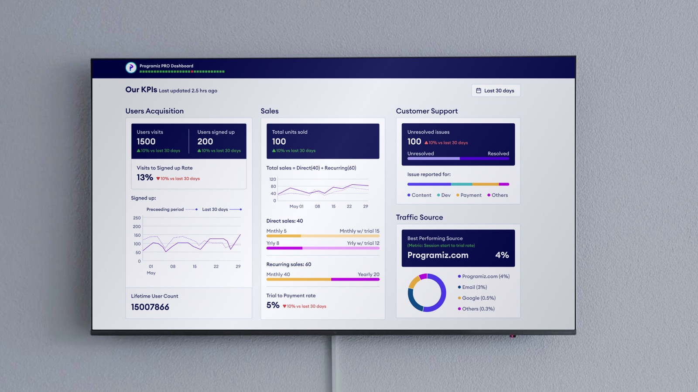
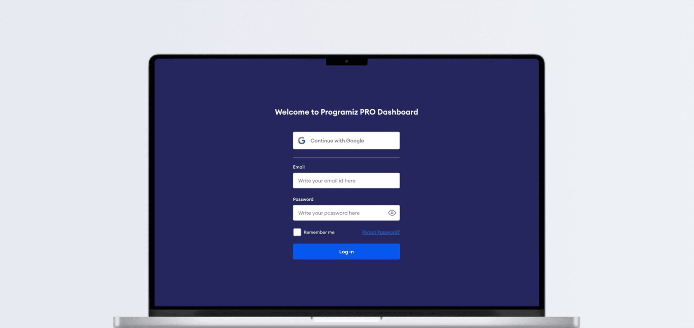
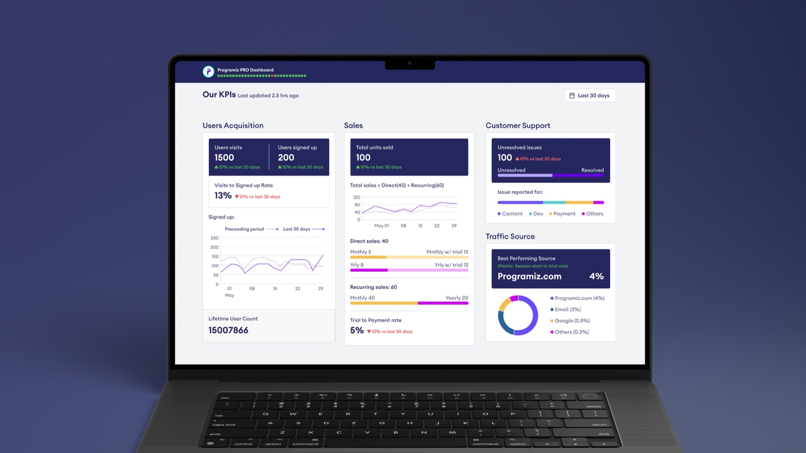
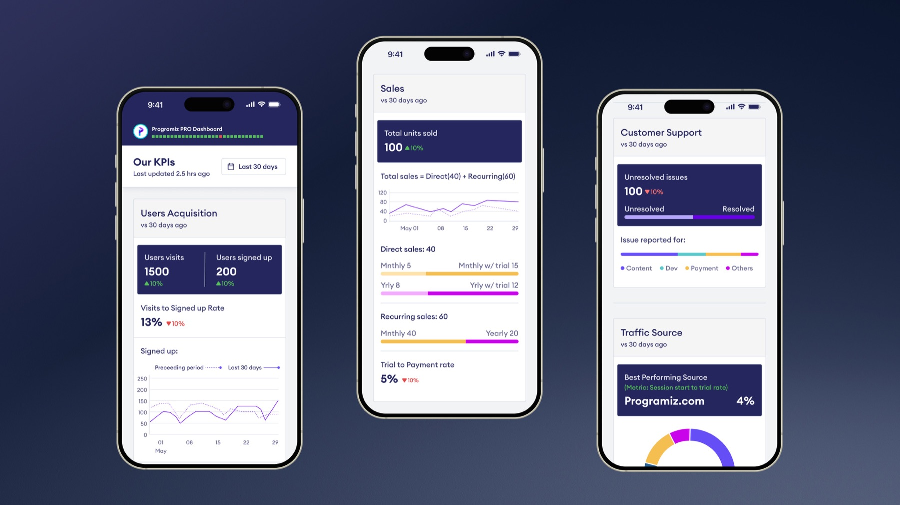

Case Study — Product Design
PRO Data Dashboard: Making product data accessible across Programiz
Cut analyst data requests by 50–75%, letting teams check user growth, sales, support, and traffic themselves.
Overview
What is PRO Data Dashboard?
The PRO Data Dashboard is an internal tool that gives Programiz teams a quick view of the company's most important KPIs: user growth, sales, support issues, and traffic sources.
It helped reduce analyst data requests by 50–75%, giving stakeholders and employees direct access to how the platform is performing day-to-day and making faster decisions.

Background & problem
Why did Programiz need a Data Dashboard?
Programiz is an edtech platform that helps beginners learn programming through tutorials and tools. Programiz PRO is their paid product with structured, hands-on coding courses.
As Programiz PRO grew, access to performance data became a bottleneck across teams. The company relied on a single data analyst to handle all data requests, which created several challenges. The data analyst received on average 4 requests per week from the team.

This led to problems like…

Data bottleneck Reliance on one analyst put load on the analyst as well as affected the workflow.

Slow decisions Limited access to timely data delayed important discussions.

Misalignment No shared visibility, leaving employees without context.
So the harder question became:
How might we give teams direct access to performance data without relying on a single analyst?
Research & synthesis
User interviews to identify data needs
The main answers I was trying to find were: what kind of data the users need and why they needed it, where the data was coming from, and whether it was possible to get the data users needed.

After gathering all the data needs, they were categorized into 4 main KPIs:
- 1. User Acquisition. How many users were actually signing up to PRO?
- 2. Sales. How many and what type of PRO subscriptions were being sold and recurring?
- 3. Traffic. Where are the users coming from?
- 4. Support. What was being reported the most?
Ideation
Why a dashboard, not something else
Since this was an internal company product, the stakeholders had predetermined it was going to be a Dashboard: a bird's-eye view of Programiz PRO's performance in the market. Other options were considered and set aside.

Design & iteration
Phase 1/2: low-fi wireframe aimed to visualize the data for each of the KPIs
The design followed two main ideas:
- 1. Each KPI would be shown through its own individual chart, which could be expanded to have a bigger view, so it was easier to get information at a glance.
- 2. Scrolling further in the page would reveal data specific to the teams of Programiz, like marketing, content, etc., so everyone could benefit from the dashboard.
Some feedback later, it was revealed that:
Phase 2/2: high-fi wireframes with feedback implementation and visual language
As it was a Programiz product, it made sense to use the company's design system, which is modern and approachable with fun accent colors on the charts.
The new wireframes had 2 major changes based on the feedback we received in Phase 1:
- 1. More context to KPI charts so users could understand where the data was coming from and compare it to other metrics.
- 2. Since this was now going to be used as a screensaver in the company's display instead of a scroll view, it was turned into a single-screen layout.

Adding context to KPIs
Final design
The final, screensaver-ready dashboard
Installed on a wall-mounted display at the Programiz office, the dashboard runs as a live screensaver, always showing the team's most current KPIs at a glance. It's also fully responsive, so anyone can pull up the same view on their own phone.




Outcome
Cut analyst data requests by 50–75%
Teams now access data independently, looping in the analyst only when deeper investigation is needed.
Shifted the workflow
Decision makers now check the dashboard first and only loop in the analyst when deeper data is needed.
Before: Ask analyst → Wait → Get data → Decide

After: Check dashboard → Decide → Ask analyst if needed